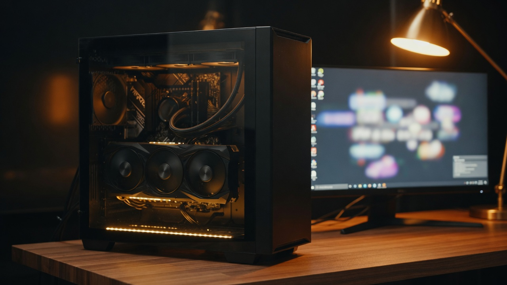
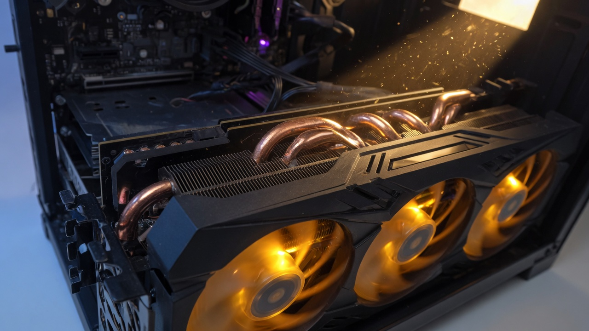
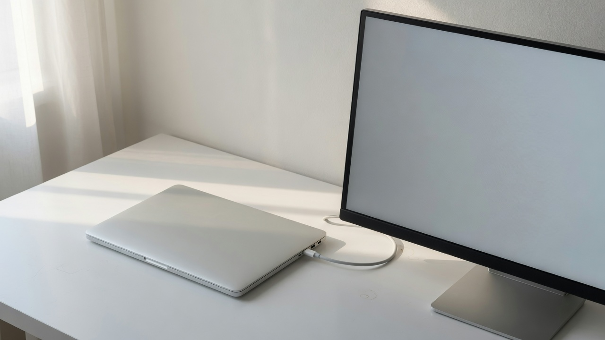
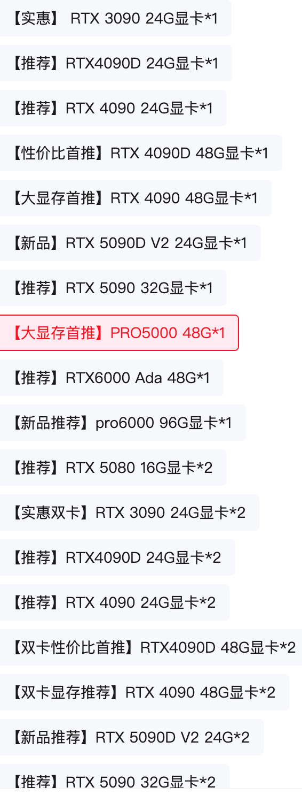
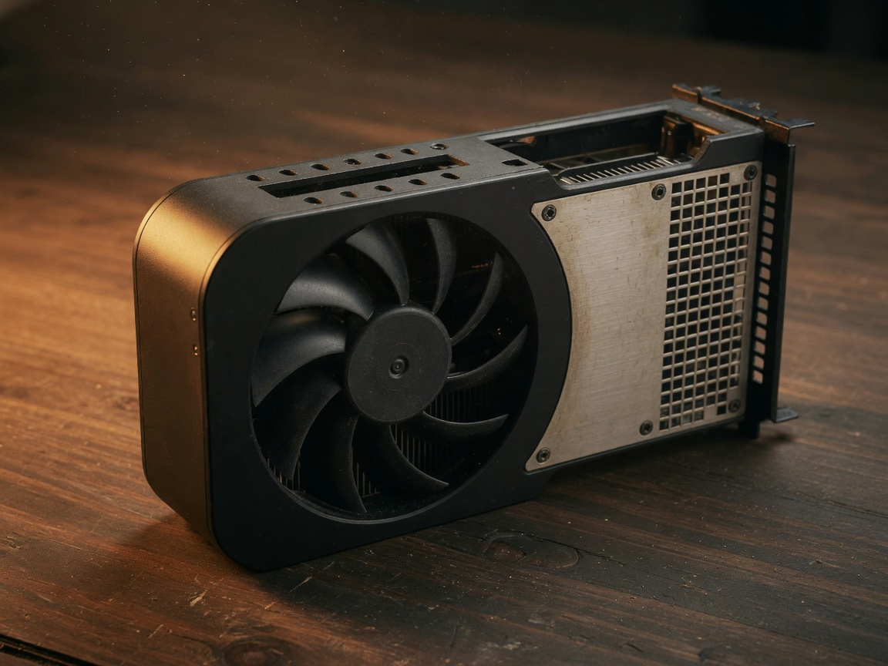
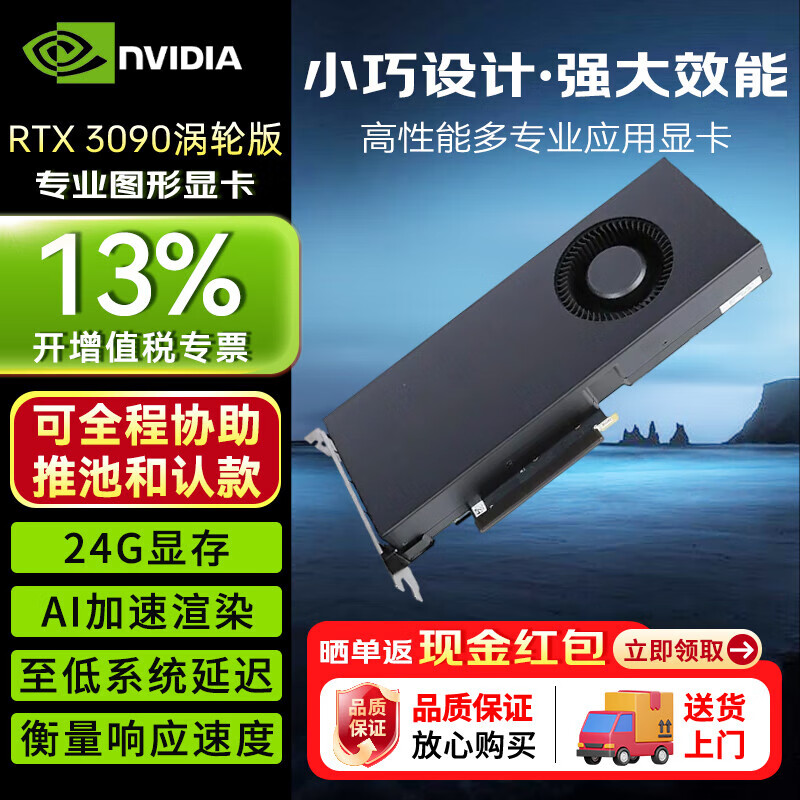
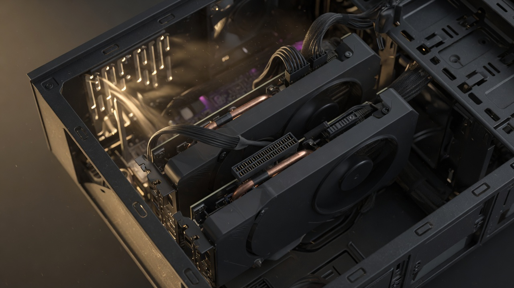
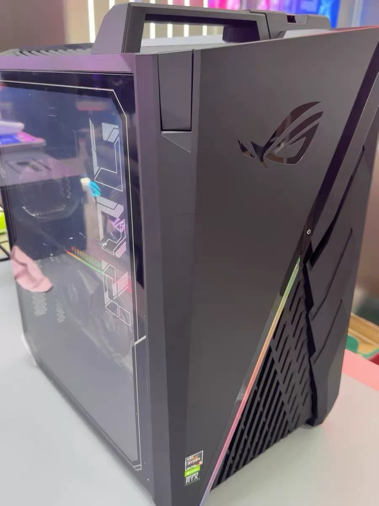
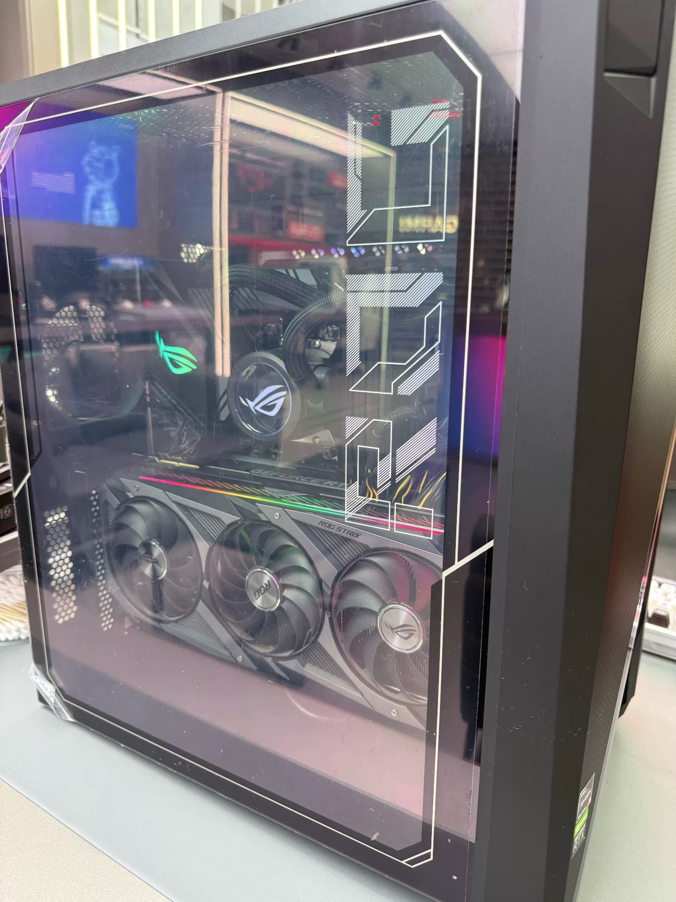
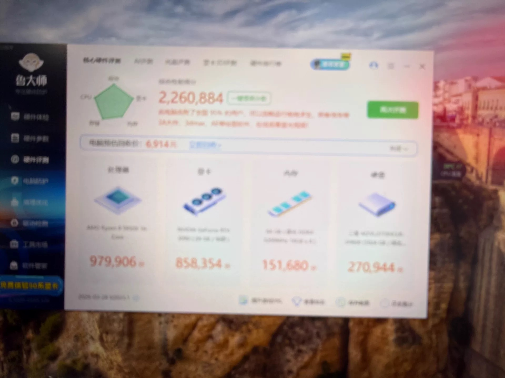

适合本地
执行层 · 27B
明确需求、小重构、截图改 UI、无限次抽取。你已经有 32G 本，现在就能试 Q4；加到 24G 独显是速度和 ComfyUI，不是换一个更聪明的模型。

家用日常是 27B Q4 这一档，不是云端那几家一线 MoE。下面按「规格 → 能力 → 显卡/整机行情 → 京东 SKU → 光魔」收束，方便对照，不是下单按钮。
本地一般跑量化后的稠密小模型。Q4 是默认；参数越大，越要显存，不一定越能干你的活。

Qwen3.8-27B 在 Artificial Analysis 上，xhigh 大约 52 分，和 GLM-5.2 max 的 51–53 坐同一档。这是第三方合成榜。日常你开 medium、本地再跑 Q4，体感会再掉。公众号那套「大 28 倍还差不多」比的是 GLM 总参数 744B；干活时只激活约 40B，和 27B 稠密只差大约 1.5 倍。本地买到的是免费执行层，不是免费大脑。
| 规格（家用默认 Q4） | 权重大约 | 显存门槛 | 能干嘛 | 不要指望 |
|---|---|---|---|---|
| 7B–14B | 5–10G | 8–12G 也能转 | 聊天、翻译、总结、小补丁 | 当编码主力会浅 |
| 27B–32B 稠密 现在的 Qwen3.8-27B |
16–19G | 24G 甜点。32k 上下文大约再加几 G；64k 大约 22G，一张 24G 卡顶格 | 按明确需求写功能、补测试、修报错、截图改 UI、私有 review。社区 3090 大约 35–45 tok/s | 关掉云端无感切换、含糊需求过夜交付、超长 agent |
| 30B 级小 MoE 如 GLM-4.7-Flash |
~20G | 24G | 更快，上限略低。适合当 27B 的备份 | 当成一线 MoE |
| 70B 稠密 | ~40G | 48G，或两张 24G 切开 | 知识面和长推理略厚。双 3090 大约 10–20 tok/s，比单卡 27B 慢一半 | 速度和 27B 打平；仍打不过云端一线 |
| 一线开源 MoE Kimi K3 / GLM-5.x / Qwen 2.4T |
130G 到几百 G | 工作站 / 多卡机柜 | 综合分大约 57–60，接近闭源 | 家用 64G 统一内存或单卡 24G |
| MiniMax H3 | 视频模型，不是聊天 | 24G 能量化出草稿 | 开源大约 4–15 秒、768p、带立体声 | 2K 成片。那是官方 API 的事 |
明确需求、小重构、截图改 UI、无限次抽取。你已经有 32G 本，现在就能试 Q4；加到 24G 独显是速度和 ComfyUI，不是换一个更聪明的模型。
要 48G 显存池。拆任务、解释陌生代码可以，要人盯着。为它再买一张卡或一张魔改 48G，只在你确认 27B 天天顶格之后。
那是 130G 起的事。64G Mac、单卡 24G、双卡 48G 都不是这一档。云端继续用。
16G 卡（5080 / 5070 Ti）玩游戏香。27B Q4 权重大约 17G，再加上下文会整天卸载。不要用 16G「兼顾」模型。
前面那几档能力，对到卡和整机。价格截至 2026-08-31 所见，会变。

| 你要的能力 | 硬件 | 行情 | 备注 |
|---|---|---|---|
| 27B 执行层，能开机就行 | 32G+ 统一内存（你已有本） | — | 大约 20–25 tok/s。没有 3A，没有完整 ComfyUI |
| 27B + ComfyUI + H3 草稿 + 4K 降特效 | 二手 3090 24G 整机 | 闲鱼整机约 12999（光魔 G35）。单卡三风扇约 7000–7600 | 24G 甜点。3090 大约 35–45 tok/s。当前最合适 |
| 同上，出图和 4K 更稳 | 4090 / 4090D 24G 整机 | 闲鱼约 2.6–3.3 万。渠道涡轮 4090D 24G 大约 1.7–1.9 万（2026-06 深圳算力单） | 同样 24G，算力大约 2.1–2.3× 3090。系统内存 64G 是地板 |
| 70B Q4 | 两张 24G，或一张 48G | 再买一张 3090 大约 +0.7–0.85 万；魔改 4090 48G 闲鱼约 2.1–2.5 万；PRO 5000 48G 京东大约 3.4–4.0 万 | 27B 用不满 48G。先租或确认 27B 顶格再买 |
| 只要容量、不打 3A | 闲鱼 M1 Max 64G 无头 | 8400–9000 | 70B 能塞但慢。Strix Halo 64G 更贵、带宽更低，不优先 |
金条 显存（满格 96G） 蓝条 相对 3090 的算力
同一张卡不能同时占满 27B、H3 和游戏。切着用。ComfyUI 推荐 pruned INT8 全家桶大约 42GB 磁盘；12–16G「能出片」，24G 才像草稿机。
截图是商品页的规格选择，不是云平台。链接从什么值得买点进来。

*1 / *2 是买一张还是两张。「实惠」「大显存首推」是商家角标。红框是官方 PRO 5000 48G。对应商品：京东 10161069338977。同一类店还会拆出单规格，比如 3090 24G 单涡轮工业包装（什么值得买 2026-01 看到大约 8000–8500）。
这是算力卡店的一个链接挂一堆 SKU：涡轮/工包为主，面向深度学习、多卡机箱。不是华硕猛禽那种游戏卡旗舰店，也不是按小时出租。京东页要登录才看得到实时价。下面按截图里每一档，对到能跑的模型和能力。默认 Q4；双卡是把模型切开，游戏帧数不会加。
按京东规格列表逐条。显存决定装得下哪一档，架构只决定快慢。
| 配置 | 显存 | 能跑什么模型 | 能力（对你） |
|---|---|---|---|
| 单卡 | |||
| 3090 *1 | 24G | 27B Q4（权重约 17G，64k 上下文大约 22G）。30B 级小 MoE。70B Q4 约 40G，装不下。 | 执行层甜点：写功能、修 bug、截图改 UI。ComfyUI / H3 768p 草稿。4K 要降。你现在这档。 |
| 4090D *1 | 24G | 和 3090 同一档模型。D 是特供，不是豪华版。 | 同样 27B 执行层，大约快 2 倍。游戏大约慢满血 4090 的 6%。无 NVLink。 |
| 4090 *1 | 24G | 同上，24G 天花板还是 27B Q4 / 小 MoE。 | 出图、4K、27B 都更快（约 2.3× 3090）。显存没变，不是 70B 卡。 |
| 4090D 48G *1 | 48G 魔改 | 70B Q4 一张装下。27B 可上 Q5/Q8、更长上下文。 | 70B 草稿机入场。焊出来的，没有英伟达质保。27B 用不满 48G。 |
| 4090 48G *1 | 48G 魔改 | 同上，算力按满血 4090。 | 比 4090D 48G 略快。闲鱼大约 2.1–2.5 万，不要当第一台。 |
| 5090D V2 *1 | 24G | 还是 24G：27B Q4，70B 装不下。V2 从 32G 砍回 24G。 | 游戏几乎满血 5090；AI 大约掉 10–25%。同档显存里更贵的 50 系。 |
| 5090 *1 | 32G | 27B Q5/Q8 宽裕。70B Q4 约 40G，32G 仍紧，长上下文会挤。 | 消费卡里 27B 最舒服的一张。不是 70B 卡。溢价凶，575W。 |
| PRO 5000 *1 | 48G 官方 | 70B Q4。27B 可 Q8。120B 级 MoE Q4 不够。 | 红框「大显存首推」：官方 48G + ECC，算力大约等于 4090D。4K 游戏不是这张卡的主场。 |
| 6000 Ada *1 | 48G 官方 | 和 PRO 5000 同一档模型：70B Q4。 | 上一代工作站旗舰，核心比 PRO 5000 多，同样 48G。二手有时比新 PRO 更香。 |
| PRO 6000 *1 | 96G 官方 | 70B Q8（约 75G，接近原权重）。120B 级 MoE Q4：gpt-oss 120B、Qwen 122B-A10B（大约 60–85G）。27B 可上 BF16。一线 MoE（Kimi K3 / GLM-5.x / Qwen 2.4T，130G 起）仍然装不下。 | 家用单卡能摸到的最大一档：70B 高质量，或 120B 小 MoE。仍不是云端大脑。ComfyUI 很宽；H3 本地还是 768p 草稿。第一台不必买。 |
| 双卡 · 模型切开凑显存，游戏不叠加 | |||
| 5080 *2 | 16G+16G | 不是一张 32G。27B Q4 必须切分才能跑；单卡 16G 会卸载。 | 游戏单卡香。为 27B 买两张 5080，不如一张 3090。 |
| 3090 *2 | 24G+24G ≈ 48G | 70B Q4。27B 几乎没好处。可 NVLink。 | 70B 最便宜的入场。约 10–20 tok/s。电源 1000W 起。光魔叠不了。 |
| 4090D *2 | 24G+24G ≈ 48G | 70B Q4，比双 3090 快，无 NVLink。 | 同样 70B 草稿机，出图仍多半一张在干。 |
| 4090 *2 | 24G+24G ≈ 48G | 同上，满血 4090 切分。 | 双卡 70B 里最快的 24G 方案之一。贵，功耗高。 |
| 4090D 48G *2 | 48G+48G ≈ 96G | 容量接近一张 PRO 6000：70B Q8、120B 级 MoE Q4。但要切分。 | 两张魔改，风险和店保×2。不如一张官方 96G 省事，也不如先确认 70B 真要用。 |
| 4090 48G *2 | 48G+48G ≈ 96G | 同上，算力更高。 | 家用过重。一线 MoE 还是装不下。 |
| 5090D V2 *2 | 24G+24G ≈ 48G | 还是 48G 池：70B Q4，不是 64G。 | V2 单卡就是 24G，双卡不会变成 5090 32G×2。 |
| 5090 *2 | 32G+32G ≈ 64G | 70B Q5/Q8 开始舒服。120B MoE Q4 仍然紧。27B 浪费。 | 消费卡双卡顶。电和钱都不是第一台该付的。 |


什么值得买上那张单独的 3090 涡轮，值友就三句：
我没看错吧，3090 涨到 8000 了？ 梅加雨 · 上海 · 2026-01-14
这有啥奇怪的，2026 年还要卖新的 3060 呢 klaokai · 湖北
矿卡翻新这一块 值友 2304665208 · 河南
闲鱼同芯三风扇当时大约 7000–7600。京东工包贵一截，买的是「涡轮形态 + 京东售后口径」，不是更强的 3090。单卡桌面选三风扇；要组双卡计算箱才看涡轮。光魔里已经有一张猛禽，不要加购。
普通 3090 可以两张一起用。叠的是显存池，不是游戏帧数。京东 SKU 里的 *2 就是这个意思。

SLI 已经死了。两张 3090 不会变成一张更强的游戏卡。
llama.cpp --tensor-split、vLLM、Ollama 可切。70B Q4 大约 40G，这是双 3090 存在的理由。
ComfyUI 多数工作流占一张卡。第二张闲着，除非自己绑 GPU1。
| 一张 3090 24G | 两张 3090 48G | |
|---|---|---|
| 27B Q4 | 正好，大约 35–45 tok/s | 几乎没好处，通信还可能更慢 |
| 70B Q4 | 要往内存卸载，很慢 | 装得下，大约 10–20 tok/s |
| 功耗 / 电源 | ~350W | ~700W，电源 1000W 起 |
3090（不是 3090 Ti）卡身有 NVLink 齿，消费卡里最后能插的。日常按层切分，PCIe 也够。4090、5090 都没有。光魔 G35：异形 45L、850W、横插一张三风扇，空间电源风道都不够，叠不了第二张。
截图对得上标题。目前最合适的「能碰」整机，前提是接受过保不退。



| 项 | 页面 / 截图 | 官方顶配口径 |
|---|---|---|
| CPU | R9 5950X 16 核 | AM4 消费级顶格 |
| 内存 | 64G DDR4 3200，四槽插满 | 官方上限 128G |
| 显卡 | 华硕 RTX 3090 24G | STRIX 三风扇 |
| 硬盘 | 截图主盘 1T | 常见 2×1T，必须问清 |
| 电源 | 未拍铭牌 | 850W，双烤大约 670W |
| 卖家 | 广州，闲鱼 10 年，202 单，98% | 过保，售出不退不换 |
5950X 已是 AM4 顶。再强要换板、换 DDR5、换壳。850W 带 4090 很紧，5090 别想。升级 4090 还是 24G，主要买速度。
前面有热插拔 M.2 仓。模型 + LoRA + 游戏建议加到 4T 级。240 水冷用了四五年，泵是耗材。
人在北京、能出到 3.2 万：五棵松 OMEN 45L（285K / 64G / 4090D）是「能玩」里最省事的。要保修：闲鱼刃 9000K 约 33499。死磕 64G 统一内存、不打 3A：还是无头 M1 Max。
售出不退不换，发货前问死，到货先测再确认。
不要买：出租链接、4090 标 3000、魔改 48G 当第一台、淘宝 2280 的「3090」、笔记本 4090 16G、京东工包涡轮往光魔里加购。
本地 27B 是免费执行层，不是免费大脑。H3 本地是 768p 草稿。游戏、出图、模型同一时刻只开一个。
整理自一次连续选型对话。价格和在售状态以当天页面为准。仓库：toolazytoname/cn-electronics-shop